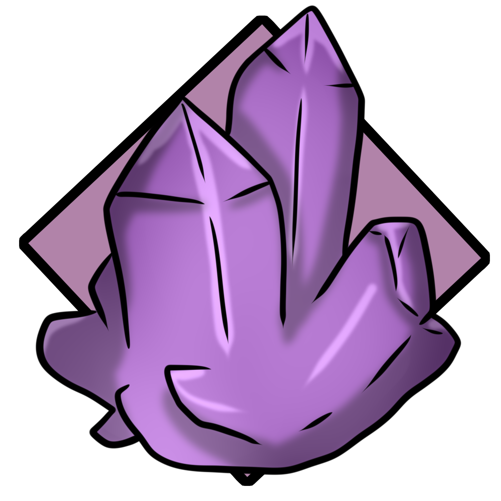
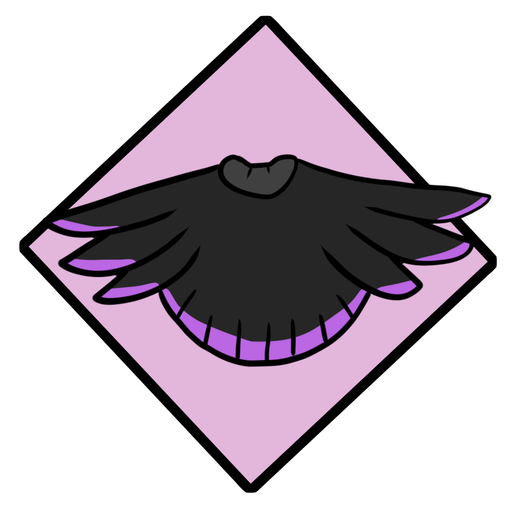

World of Raluune
Home
Map
Reclaimer
A group of people who worship the dragons as gods once again. Likely converted by Calypso, or one of those saved by Xilanis.
Symbol of the Reclaimers

Purple crystals are viewed as memories of the past to believers.

Typical attire for a believer.
©Rachel Lindemann (Auviperic)